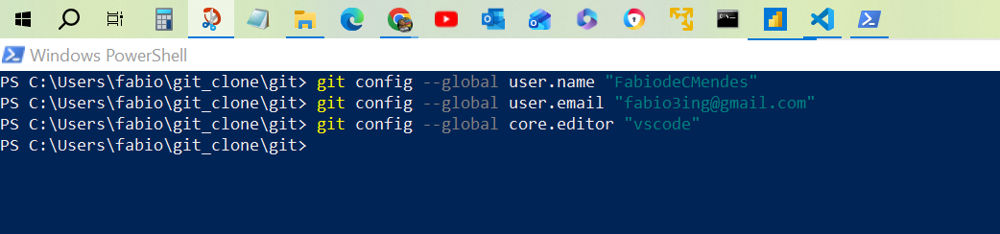

git config --global user.name "FabiodeCMendes" git config --global user.email "fabio3ing@gmail.com" git config --global core.editor "vscode" git config --global core.editor "vim"

-- Controle de versão distribuido Commits - Branches - Merge - - biblioteca on line - GitHub, GitLab, Bitbucket - repositorio local - repositorio remoto - Pull Request - Enviar solicitações para integrar mudanças em um projeto principal, facilitando a colaboração e revisão e aprovação de código. - Fork - Clone Issues - Ferramenta de rastreamento de problemas e tarefas em projetos de software, permitindo que os desenvolvedores registrem, organizem e acompanhem bugs, melhorias e solicitações de recursos. PS C:\Users\fabio\git_clone\git\imgs> > git clone https://github.com/FabiodeCMendes/git.git git init git add . git commit -m "first commit" git branch -M main git remote add origin git push -u origin main